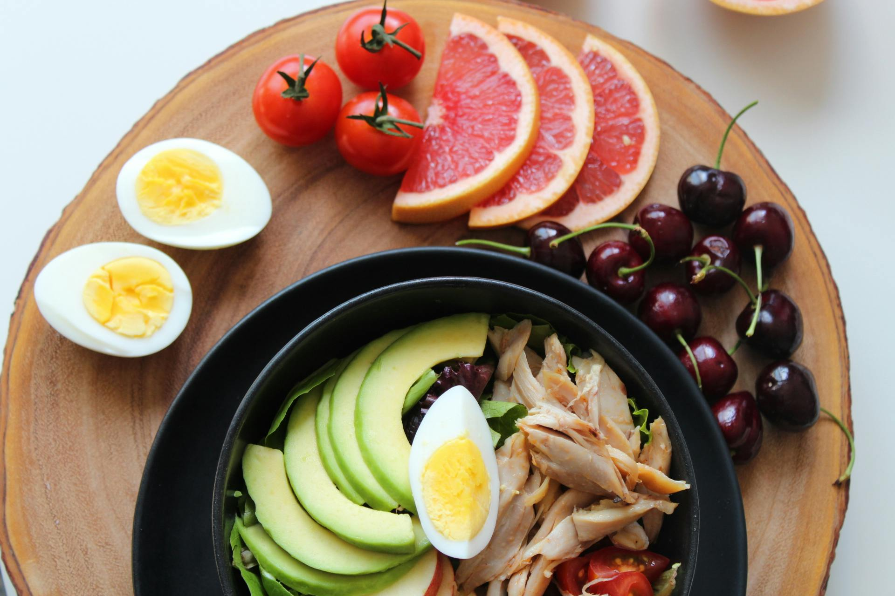

Dicas de Alimentação Saudável 🍏
Manter uma dieta equilibrada é essencial para a saúde. Inclua em sua rotina alimentos ricos em nutrientes e balanceados entre proteínas, carboidratos e gorduras saudáveis. Aqui estão dicas para montar uma alimentação saudável:
Comer várias porções de frutas e vegetais diariamente
Frutas e vegetais são fontes importantes de vitaminas, minerais e fibras. Tente incluir uma variedade de cores em seu prato, pois diferentes cores geralmente indicam diferentes nutrientes. Experimente frutas da estação e vegetais crus ou cozidos no vapor para preservar suas propriedades.
Evitar alimentos processados
Alimentos processados costumam conter aditivos, conservantes e níveis elevados de açúcar, sal e gorduras saturadas. Prefira alimentos in natura ou minimamente processados. Leia os rótulos e escolha opções que contenham ingredientes que você reconhece.
Planejar refeições com antecedência para evitar escolhas impulsivas
Planejar suas refeições semanalmente pode ajudar a garantir que você inclua todos os grupos alimentares e evite o consumo de fast food ou snacks pouco saudáveis. Faça uma lista de compras e prepare algumas refeições com antecedência para facilitar durante a semana.
Beber muita água
A hidratação é crucial para o funcionamento adequado do corpo. Tente beber pelo menos 2 litros de água por dia. Se você tem dificuldade em consumir água pura, experimente infusões de frutas ou chás sem açúcar.